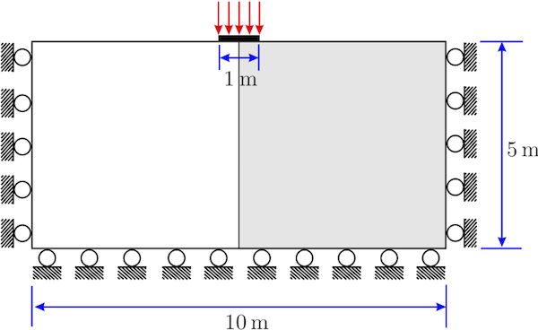
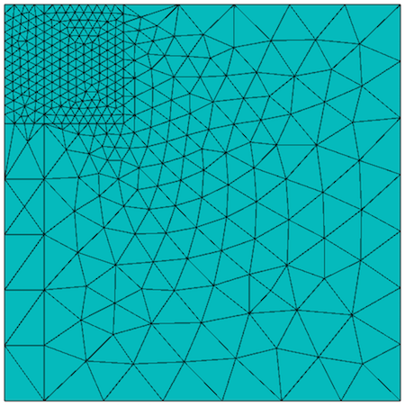
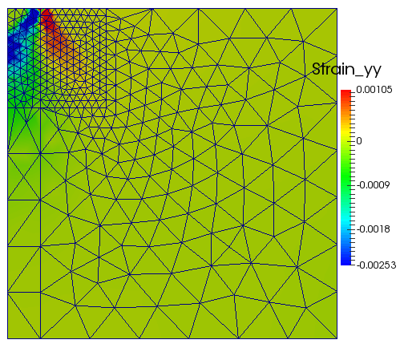
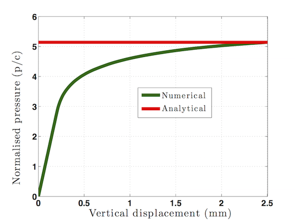

Introduction
Associated J2 plasticity with linear kinematic and isotropic hardening is considered here. Equations defining free energy, plastic surface and flow potential are defined in SmallStrainJ2Plasticity. Generic plasticity model with closet point projection and calculation of consistent (algoritmic) tangent matrix is implemented in SmallStrainPlasticity::ClosestPointProjection. Finite element for inelastic analysis is implemented in SmallStrainPlasticity.
Running code for inelastic plate with hole.
Mesh and geometry generated with Cubit, see file
reset
brick x 2 y 1 z 0.1
create Cylinder height 1 radius 0.5
move Volume 2 midpoint location curve 9 include_merged
subtract volume 2 from volume 1
create pressure on surface 6 magnitude -1
create Displacement on surface 14 dof 1 fix 0
create Displacement on surface 12 dof 2 fix 0
create Displacement on surface 11 dof 3 fix 0
set duplicate block elements on
block 1 vertex 2
block 1 name 'LoadPath'
volume all scheme Tetmesh
volume all size auto factor 7
mesh volume all
In addition user can prescribe loading history
where first column indicate time and second column is a load factor.
To execute program in users_modules/small_strain_plasticity following command is executed
mpirun -np 4 ./small_strain_plasticity_problem \
-my_file plate_with_hole.h5m \
-my_order 2 \
-my_young_modulus 1 -my_poisson_ratio 0.25 \
-my_sigma_y 1 -my_H 0.1 \
-my_bbar 1 \
-snes_monitor -snes_atol 1e-6 -snes_max_it 15 -snes_linesearch_type bt \
-ksp_type fgmres -pc_type lu -pc_factor_mat_solver_package mumps \
-my_load_history plate_with_hole_history.txt \
-my_final_time 3 -my_delta_time 0.05
where
- -my_file plate_with_hole.h5m is a name of input mesh
- -my_order 2 sets approximation order (if no option set, default order 2)
- -my_young_modulus 1 -my_poisson_ratio 0.25 set elastic material parameters
- -my_bbar 1 switch on bbar method (works well with 2nd order approximation, switch on by default if no option set)
- -my_sigma_y 1 -my_H 0.1 -my_K 0 -my_phi 1, sets yield stress, isotropic hardening modulus, kinematic hardening modulus and last parameter balance between isotropic hardening, respectively. If \(\phi=1\) only isotropic hardening takes place, otherwise if \(\phi=0\) only kinematic hardening is active. \(\phi\) can take values form 0 to 1. See details in SmallStrainJ2Plasticity.
- -snes_atol 1e-6 -snes_max_it 15 set tolerance and maximal number of iterations for Newton solver.
- -my_load_history plate_with_hole_history.txt loads history file
- -my_final_time 3 -my_delta_time 0.05 sets final time and initial time step. Note that analysis is quasi-static, i.e. inertia forces are neglected.
Strip footing collapse example.
The geometry and boundary conditions for this problem are shown in the following figure. The analytical solution for the limiting load for this problem is given in [1] as
\[
P_{limit}=\left(2+\pi\right)\approx5.14c\approx2.97\sigma_{y},\qquad c=\frac{{\sigma}}{\sqrt{3}}
\]
where \(c\) is the cohesion or shear strength and \(\sigma_y\) is yield strength. Only one-half of the model shown in grey is analysed due to symmetry with plane strain conditions (three-dimensional geometry is created in MoFEM and z-displacement on front and back faces are set to zero) and load control.
material properties.
- Young’s modulus = \(E\) = 1e7 kPa
- Poisson's ratio = \(\nu\) = 0.48
- Yield strength = \(\sigma_y\) = 848.7 kPa

Geometry for the strip footing collapse example
The following CUBIT journal file is used to create input file including mesh and boundary conditions for this numerical example
#!python
cubit.cmd('new')
SigY=848.7e-3;
sqrt3=1.7321;
c=SigY/sqrt3
Pres=5.14*c;
cubit.cmd('set duplicate block elements on ')
cubit.cmd('brick x 5 y 5 z 0.1')
cubit.cmd('brick x 0.5 y 5 z 0.1')
cubit.cmd('move surface 10 location surface 4 include_merged')
cubit.cmd('chop volume 1 with volume 2')
cubit.cmd('brick x 1.5 y 1.5 z 0.1')
cubit.cmd('move volume 5 x -1.75 y 1.75 include_merged')
cubit.cmd('chop volume 3 with volume 5 keep')
cubit.cmd('chop volume 4 with volume 5 keep')
cubit.cmd('delete volume 3 4 5')
cubit.cmd('imprint volume all')
cubit.cmd('merge volume all')
str1='create pressure on surface 31 magnitude '+str(Pres); cubit.cmd(str1)
cubit.cmd('create Displacement on surface 33 39 dof 1 fix 0')
cubit.cmd('create Displacement on surface 35 48 dof 2 fix 0')
cubit.cmd('create Displacement on surface 53 45 29 36 49 38 43 32 dof 3 fix 0')
cubit.cmd('volume 6 8 size auto factor 7')
cubit.cmd('volume 6 8 scheme tetmesh')
cubit.cmd('mesh volume 6 8')
cubit.cmd('volume 7 9 size auto factor 8')
cubit.cmd('volume 7 9 scheme tetmesh')
cubit.cmd('mesh volume 7 9')
cubit.cmd('block 1 vertex 38')
cubit.cmd('block 1 name "LoadPath"')
cubit.cmd('save as "/Users/zahur/Desktop/Plasticity/Strip_footing.cub" overwrite')
The mesh used for this problem is shown in the following figure

Mesh fo for the strip footing collapse example
to execute the program with the given input file and other input parameter, the following command is used
mpirun -np 16 ./small_strain_plasticity_problem \
-my_file Strip_footing.cub \
-my_order 2 -my_bbar 1 \
-my_young_modulus 1e4 -my_poisson_ratio 0.48 \
-my_sigma_y 848.7e-3 -my_H 1 \
-snes_monitor -snes_atol 1e-6 -snes_max_it 15 -snes_linesearch_type l2 \
-ksp_type fgmres -pc_type lu -pc_factor_mat_solver_package mumps \
-my_load_history plate_with_hole_history.txt \
-my_final_time 1 -my_delta_time 0.02 | tee log
and then the following command is used to retrieve the data and store in a file for plotting of force displacement curve
echo 0 0 > gp3 && grep
"load_path DISPLACEMENT \[ 1" log | awk
'{print $6,$8}' | tee -
a gp3
The output \(\varepsilon_{yy}\) and load-displacement curve are shown in the following figures. For comparison the analytical solution for the limiting load is also given in the load-displacement plot.

strain_yy contours for the strip footing collapse example

Load-displacement curve for the strip footing collapse example
References
- [1]. E. A. de Souza Neto, D. Peric, and D. R. J. Owen. Computational Methods for Plasticity: Theory and Applications. John Wiley & Sons, Ltd, 2008.